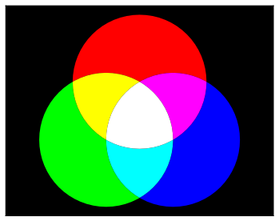
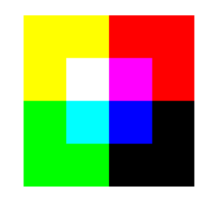

The matplotlib function imshow() creates an image from a
2-dimensional numpy array. The image will have one square for each
element of the array. The color of each square is determined by the value of the corresponding
array element and the color map used by imshow().
import matplotlib.pyplot as plt
import numpy as np
n = 4
# create an nxn numpy array
a = np.reshape(np.linspace(0,1,n**2), (n,n))
plt.figure(figsize=(12,4.5))
#use imshow to plot the array
plt.subplot(131)
plt.imshow(a, #numpy array generating the image
cmap = 'gray', #color map used to specify colors
interpolation='nearest' #algorithm used to blend square colors; with 'nearest' colors will not be blended
)
plt.xticks(range(n))
plt.yticks(range(n))
plt.title('Gray color map, no blending', y=1.02, fontsize=12)
#the same array as above, but with different color map
plt.subplot(132)
plt.imshow(a, cmap = 'viridis', interpolation='nearest')
plt.yticks([])
plt.xticks(range(n))
plt.title('Viridis color map, no blending', y=1.02, fontsize=12)
#the same array as above, but with blending
plt.subplot(133)
plt.imshow(a, cmap = 'viridis', interpolation='bicubic')
plt.yticks([])
plt.xticks(range(n))
plt.title('Viridis color map, bicubic blending', y=1.02, fontsize=12)
plt.show()
Note. Color maps assign colors to numbers from the range [0, 1].
By default imshow() scales elements of the numpy array so that the smallest element
becomes 0, the largest becomes 1, and intermediate values are mapped to the interval
[0, 1] by a linear function. Optionally imshow() can be called with arguments vmin
and vmax. In such case all elements of the array smaller or equal to vmin are mapped
to 0, all elements greater or equal to vmax are sent to 1, and the elements between
vmin and vmax are mapped in a linear fashion into the interval [0,1].
The imsave() function is similar to imshow(), but instead of
displaying an image it saves it to a file. In the file each
element of the numpy array describes one pixel. The imsave()
function does not have the interpolation argument.
n = 500
# create an nxn numpy array
a = np.random.random((n,n))
# save the image to a file 'test.png' using the 'jet' color map to specify colors
plt.imsave('test.png', a, cmap = 'inferno')
Here is a file created by the above code.
RGB is a color model commonly used to describe colors displayed on computer screens. RGB uses three basic colors: red, green, and blue. Other colors are obtained by mixing these basic components in various proportions.
In the RGB model each color is described by three numbers that give
intensities of red, green, and blue. In matplotlib these numbers are
between 0 (full off) to 1 (full on), but in many other computer
applications they are taken to be integers between 0 and 255. The triple
(0,0,0) represents the black color and (1,1,1) (or
(255,255,255)) represents white.
RGB coordinates can be used to specify colors in all matplotlib plotting functions:
n = 20
m = 4
# three nxm numpy arrays with randomly selected RGB coordinates
r = np.random.random((n,m))
g = np.random.random((n,m))
b = np.random.random((n,m))
plt.figure(figsize =(15, 4))
plt.axes(aspect='equal')
plt.ylim(-0.7, 3.7)
plt.xlim(-0.7, 19.7)
for i, j in [(i, j) for i in range(n) for j in range(m)]:
#plot a square with color given by RGB coordinates
plt.plot(i, j, 's', color=(r[i,j], g[i,j], b[i,j]), markeredgecolor='w', ms=42)
ax = plt.gca()
ax.set_axis_bgcolor('k')
plt.xticks([])
plt.yticks([])
plt.show()
The functions imshow() and imsave() can create images with
colors specified by RGB coordinates. To do this
we use a 3-dimensional numpy array a of dimensions m \(\times\)
n \(\times\) 3. Such array consists of three slices a[:,:, 0],
a[:,:, 1], and a[:,:, 2] that give RGB coordinates of colors in
the image.
import matplotlib.pyplot as plt
import numpy as np
n = 4
#create a 3-dimensional numpy array with randomly selected RGB coordinates
a = np.random.random((n,n,3))
plt.figure(figsize=(11,3))
plt.subplot(141)
r = a.copy()
r[:,:,[1,2]] = 0 #set green and blue coordinates to 0; this will display reds only
plt.yticks(range(n))
plt.xticks(range(n))
plt.title('Red component')
plt.imshow(r, interpolation='nearest')
plt.subplot(142)
g = a.copy()
g[:,:,[0,2]] = 0 #set red and blue coordinates to 0 to show greens
plt.xticks(range(n))
plt.yticks([])
plt.title('Green component')
plt.imshow(g, interpolation='nearest')
plt.subplot(143)
b = a.copy()
b[:,:,[0,1]] = 0 #set red and green coordinates to 0 to show blues
plt.yticks([])
plt.xticks(range(n))
plt.title('Blue component')
plt.imshow(b, interpolation='nearest')
plt.subplot(144)
plt.xticks(range(n))
plt.yticks([])
plt.title('RGB mixture')
plt.imshow(a, interpolation='nearest')
plt.show()
Exercise. Recreate the following image:
While imshow() and imsave() produce an image from a numpy array,
the imread() function takes as its argument an image file and
converts it into a numpy array. The following code uses the file
tiger.jpg.
img_array = plt.imread('tiger.jpg')
img_array a 3-dimensional numpy array that describes RGB coordinates
of all pixels of the image:
print(img_array)
[[[ 60 73 19] [ 62 75 21] [ 63 78 23] …, [211 212 170] [216 221 181] [221 227 191]] [[ 53 65 15] [ 53 67 16] [ 55 69 16] …, [213 214 170] [220 222 183] [225 229 192]] [[ 44 57 11] [ 45 58 12] [ 45 61 14] …, [215 214 170] [220 222 182] [227 229 192]] …, [[ 91 123 47] [ 89 121 45] [ 93 121 47] …, [ 81 75 39] [ 75 62 30] [ 76 59 29]] [[ 96 128 52] [ 87 117 43] [ 79 106 35] …, [ 76 70 34] [ 72 59 25] [ 74 57 27]] [[ 85 116 40] [ 73 103 29] [ 62 89 18] …, [ 74 68 32] [ 72 59 25] [ 77 61 28]]]
Notice that entries of img_array are positive integers. This is the case
because, as it was mentioned above, in computer applications RGB coordinates are
often represented by integers in the range 0-255. For the purposes of
manipulating this array it will be convenient to convert its entries
into floats in the range 0.0-1.0. This can be done by dividing all
entries of img_array by 255:
tiger = img_array/255
print(tiger)
[[[ 0.23529412 0.28627451 0.0745098 ] [ 0.24313725 0.29411765 0.08235294] [ 0.24705882 0.30588235 0.09019608] …, [ 0.82745098 0.83137255 0.66666667] [ 0.84705882 0.86666667 0.70980392] [ 0.86666667 0.89019608 0.74901961]] [[ 0.20784314 0.25490196 0.05882353] [ 0.20784314 0.2627451 0.0627451 ] [ 0.21568627 0.27058824 0.0627451 ] …, [ 0.83529412 0.83921569 0.66666667] [ 0.8627451 0.87058824 0.71764706] [ 0.88235294 0.89803922 0.75294118]] [[ 0.17254902 0.22352941 0.04313725] [ 0.17647059 0.22745098 0.04705882] [ 0.17647059 0.23921569 0.05490196] …, [ 0.84313725 0.83921569 0.66666667] [ 0.8627451 0.87058824 0.71372549] [ 0.89019608 0.89803922 0.75294118]] …, [[ 0.35686275 0.48235294 0.18431373] [ 0.34901961 0.4745098 0.17647059] [ 0.36470588 0.4745098 0.18431373] …, [ 0.31764706 0.29411765 0.15294118] [ 0.29411765 0.24313725 0.11764706] [ 0.29803922 0.23137255 0.11372549]] [[ 0.37647059 0.50196078 0.20392157] [ 0.34117647 0.45882353 0.16862745] [ 0.30980392 0.41568627 0.1372549 ] …, [ 0.29803922 0.2745098 0.13333333] [ 0.28235294 0.23137255 0.09803922] [ 0.29019608 0.22352941 0.10588235]] [[ 0.33333333 0.45490196 0.15686275] [ 0.28627451 0.40392157 0.11372549] [ 0.24313725 0.34901961 0.07058824] …, [ 0.29019608 0.26666667 0.1254902 ] [ 0.28235294 0.23137255 0.09803922] [ 0.30196078 0.23921569 0.10980392]]]
We can use imshow() to display the image:
plt.figure(figsize=(10,10))
plt.imshow(tiger)
plt.show()
The image can be modified by changing the numpy array. For example, if we multiply the array by a number \(0\leq x \leq 1\) we will darken the image:
plt.figure(figsize=(10,6))
for i in range(1,5):
plt.subplot(2,2,i)
x = 1 - 0.2*(i-1)
plt.axis('off') #hide coordinate axes
plt.title('x={:.1f}'.format(x))
plt.imshow(tiger*x)
plt.show()
We can crop the image by taking a slice of the array:
plt.figure(figsize=(6,6))
plt.imshow(tiger[:300,100:400,:])
plt.axis('off')
plt.show()
If we set elements of the array that give green and blue coordinates of RGB colors to 0, we will get the red part of the image:
red_tiger = tiger.copy()
red_tiger[:, :,[1,2]] = 0
plt.figure(figsize=(10,10))
plt.imshow(red_tiger)
plt.axis('off')
plt.show()
{kind=link}
{kind=link}
{kind=link}
{kind=link}
{kind=link}
{kind=link}
{kind=link}
{kind=link}
{kind=link}
{kind=link}
{kind=link}